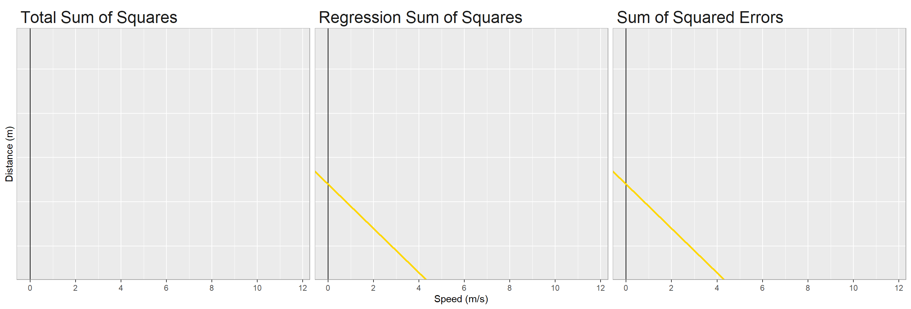

Regression Workbook
Regression Workbook
The goal of this workbook is to give you lots of hands-on practice with the regression topics we learned in class without adding extra assignments.
Simple Linear Regression
Simple linear regression is a regression between one \(x\) variable and one \(y\) variable. It takes the form: \[\hat{y_i}=\beta_0 + \beta_1*x_i\] The formula to calculate \(\beta_1\) is: \[\beta_1 = \dfrac{cov(x,y)}{var(x)}=\dfrac{\sum_{i=1}^n(x_i-\bar{x})(y_i-\bar{y})}{\sum_{i=1}^n(x_i-\bar{x})^2}\] The formula to calculate \(\beta_0\) is: \[\beta_0 = \bar{y}-\beta_1*\bar{x}\]
For our first example, we will be using the cars data set, which measures the speed in mph and stopping distance in feet for 50 observations of cars. We will create a simple regression to predict stopping distance using speed. Using the data in the table, calculate \(\beta_1\), \(\beta_0\), and the expected stopping distance if a car is going 7.15 mph.
| Average Speed | 15.4 |
| Average Stopping Distance | 43.0 |
| Covariance of Speed and Stopping Distance | 109.9 |
| Variance of Speed | 28.0 |
| Variance of Stopping Distance | 664.1 |
Regressions hardly ever perfectly accurately predict the outcome. The difference between the predicted/fitted value and the actual value is called the error or residual. The formula is: \(\varepsilon_i = y_i-\hat{y_i}\).
What is the error for a car going 7.15mph that stops in 15.1 feet?Model Diagnostics
There are three primary things we use in a simple linear regression to see how good the model and its predictors are:
- The \(R^2\) tells us goodness of fit, or how much predictive power the equation has.
- The \(F\) statistic can be used to test whether the model does significantly better than the mean, \(\bar{y}\), at predicting the value of \(y\).
- The \(t\) statistics and p-values associated with each coefficient tell us whether the \(x\) values are significant predictors of \(y\). We can have a significant model even if some of the \(x\) variables are not significant.
Calculating \(R^2\)
To calculate the \(R^2\), we need to know the variation in \(y\) that is predicted by the model. The Total Sum of Squares \((SST)\) adds up all of the variation in y, the Regression Sum of Squares \((SSR)\) adds up the variation explained by the model, and the Sum of Squared Errors \((SSE)\) adds up all of the variation not explained by the model.
Here are the formulas to calculate each of these:
\[ SST = \sum_{i=1}^n(y_i-\bar{y})^2 = SSE + SSR \]
\[ SSE=\sum_{i=1}^n(y_i-\hat{y_i})^2 \]
\[ SSR=\sum_{i=1}^n(\hat{y_i}-\bar{y})^2 \]
The formula for \(R^2\) is the total variation explained by the model divided by the total variation.
\[ R^2=\dfrac{SSR}{SST}=\dfrac{SST-SSE}{SST} \]
The interpretation of the \(R^2\) is: “\(R^2\) % of the variation in \(y\) can be explained by the model.”
The \(SSE\) for the car model is 11,354, the \(SSR\) is 21,185. Based on this, fill in the blank: “ percent of the variation in stopping distance can be explained by the speed of the car.”
The F Test
The point of calculating the \(F\) statistic is to see if the model is statistically significantly better than just using the mean. The hypotheses are: \(H_0\): The model is NOT significantly better than using the mean, \(\bar{y}\), to predict \(y\). \(H_A\): The model IS better than using the mean to predict \(y\).
The \(F\) stat is the ratio of the variation explained by the model to the variation not explained by the model. We need the Regression Mean Squares (\(MSR\)) and the Mean Square Error (\(MSE\)) to to calculate it. \[ F = \dfrac{MSR}{MSE}=\dfrac{\dfrac{SSR}{DF_{SSR}}}{\dfrac{SSE}{DF_{SSE}}} \] where \(DF_{SSR} = k\) and \(DF_{SSE} = n-k-1\), where \(k\) is the number of coefficients or parameters and \(n\) is the number of observations.
What is the \(F\) statistic for the car regression?
Once we have the F-statistic, we can compare it to a known distribution to get a p-value. The p-value is the probability that we would see the values that we do if the model is NOT better than the mean at predicting \(y\). That means that the lower the p-value, the better our model is.
That value is statistically significant. What does a statistically significant F test generally mean about regression models?
T Tests and Coefficient Interpretation
For each coefficient within the model, we can perform a T test to say whether the variable is a significant predictor of \(y\). \(H_0\): The coefficient on \(X\) is 0. \(H_A\): The coefficient on \(X\) is different from 0.
First we calculate the standard error of each coefficient, \(se(\hat{\beta_i})\), which is the ratio of the average squared error of the model to the total squared error of the predictor. You don’t need to know how to calculate the standard error, but the formula is this: \[se(\hat{\beta_i})=\sqrt{\dfrac{\sum_i(y_i-\hat{y_i})^2}{(n-2)\sum_i(x_i-\bar{x})^2}}=\sqrt{\dfrac{\sum_i\varepsilon_i}{(n-2)\sum_i(x_i-\bar{x})^2}}\]
We use the standard error to calculate the t statistic. \[t = \dfrac{\hat{\beta_i}}{se(\hat{\beta_i})}\] The t-statistic has \(n-k-1\) degrees of freedom, where \(n\) is the number of observations and \(k\) is the number of predictors. This can be compared to the known distribution (you can use the t-table you got in class!) to get a p-value, which tells us the probability that we see the data we do if the coefficient is actually 0 and \(x\) has no effect.
The coefficent we found for speed was \(3.93\), and the standard error is \(0.42\). What is the t-statistic?
This is highly significant, since it’s much higher than the values in our t-table. What does that mean?Extra Practice
If you need more practice with simple linear regression, here’s another example. This scatterplot shows the relationship between the price of a pack of cigarettes and the number of packs purchased per year divided by the number of people of smoking age for 46 states in 1992.
Use the data in the table to find \(\beta_0\), \(\beta_1\), the \(R^2\), F, and the T statistic associated with the coefficient for a regression using price to predict packs. Be sure to interpret each coefficient that you calculate.
| Number of Observations | 26 |
| Mean of Price | 1.23 |
| Mean of Packs | 129.8 |
| Covariance of Price and Packs | -1.49 |
| Variance of Price | 0.011 |
| Variance of Packs | 652.4 |
| Regression Sum of Squares | 9258 |
| Sum of Squared Errors | 20466 |
| Standard Error of \(\beta_1\) | 30.4 |
Tip
First, calculate \(\beta_1\): \[\beta_1 = \dfrac{cov(x,y)}{var(x)}=\dfrac{-1.49}{0.011}=-135.5\] Then, calculate \(\beta_0\): \[\beta_0 = \bar{y}-\beta_1*\bar{x}=129.8-(-135.5)*1.23=296.5\] The way we interpret these coefficients is: 1) If the price equals 0, the expected number of cigarettes per smoking-aged adult is 296.5. 2) If the price is $1 per pack more, the expected number of packs consumed is 135.5 lower.
Next, calculate the \(R^2\). We need to use the \(SSR\) and \(SSE\) for this. \[R^2 = \dfrac{SSR}{SST} = \dfrac{SSR}{SSR+SSE} = \dfrac{9259}{9259+20466} = 0.311\] We interpret this by saying that “31.1% of the variation in cigarette packs consumed can be predicted by the variation in price.”
Next, we calculate the F statistic. \[ F = \dfrac{MSR}{MSE}=\dfrac{\dfrac{SSR}{DF_{SSR}}}{\dfrac{SSE}{DF_{SSE}}} = \dfrac{\dfrac{9258}{1}}{\dfrac{20466}{46-1-1}}=19.9 \] If we looked it up, we would see that this is very significant, meaning that the model is significantly better than using the mean of packs smoked to predict.
Finally, calculate the t statistic. \[ T = \dfrac{\beta_1}{se(\beta_1)}=\dfrac{-135.5}{30.4}=-4.45 \] If you look this up in a T table, the p-value is very small, which indicates that price is a good predictor of packs smoked.
Multiple Linear Regression
In multiple linear regression, we simply add more explanatory variables. As an example, we will use the cigarette data from above but add another variable: average income. We can use income and the price of cigarettes to predict cigarette consumption.
\[Consumption = \beta_0 + \beta_1*Price+\beta_2*Income\]
Call:
lm(formula = packs_unlogged ~ price_unlogged + income_unlogged,
data = CigarettesB)
Residuals:
Min 1Q Median 3Q Max
-47.23 -14.90 -0.47 14.41 50.94
Coefficients:
Estimate Std. Error t value Pr(>|t|)
(Intercept) 291.2090 38.0066 7.662 1.43e-09 ***
price_unlogged -144.1001 35.2302 -4.090 0.000186 ***
income_unlogged 0.1353 0.2110 0.642 0.524591
---
Signif. codes: 0 '***' 0.001 '**' 0.01 '*' 0.05 '.' 0.1 ' ' 1
Residual standard error: 21.71 on 43 degrees of freedom
Multiple R-squared: 0.3097, Adjusted R-squared: 0.2776
F-statistic: 9.647 on 2 and 43 DF, p-value: 0.0003458Based on this regression, answer the following questions.
1) Is the model significantly better than using the null model based on the F statistic?College and Beyond Example
Let’s try another